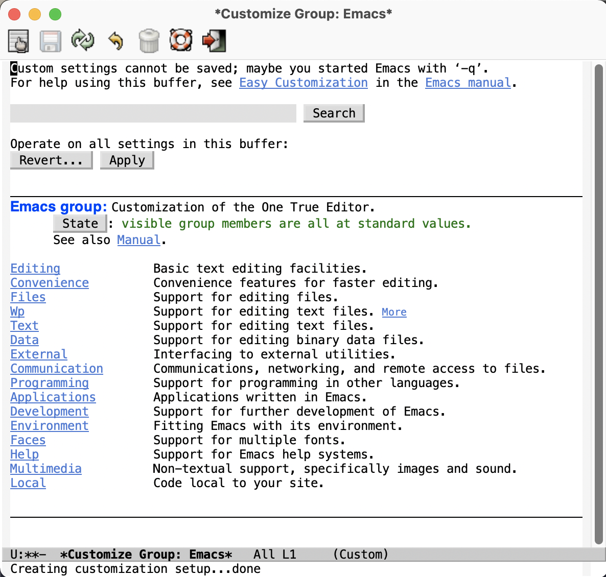
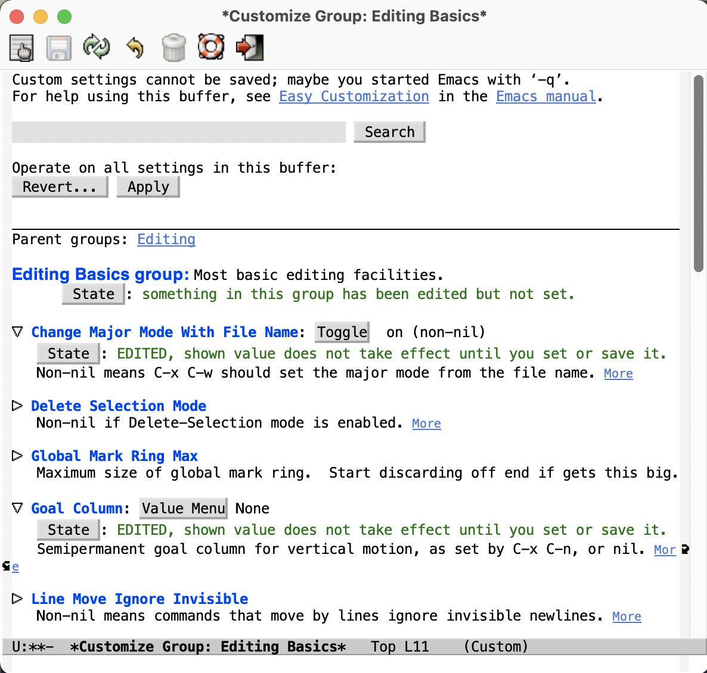

基本配置
本篇介绍配置 Emacs 相关的知识和操作。本文主要内容归纳：
- 简单的 Emacs Lisp 语言知识——让你在配置时游刃有余
- 配置文件的知识——模块化的写法
- 一些观点——最好不要完全使用并依赖大牛的配置，把配置掌握在自己手中
- 一些基础配置——开启部分 Emacs 功能
- 介绍插件的安装并用 use-package 管理插件——管理成本低、逻辑更清晰
- 快捷键、变量的设置——迈出你的自定义脚步
Emacs Lisp 简介
为什么要了解 Emacs Lisp
Emacs Lisp 是世界上第二古老高级编程语言 Lisp 专为 Emacs 打造的方言。官方提供了 Emacs Lisp 的入门介绍和参考手册。简单来说 Emacs Lisp 编程语言就是用来为 Emacs 编写逻辑，Emacs 的底层和绝大部分插件都是用这个语言写出来的。同时，作为用户，我们也可以使用 Emacs Lisp 编写一些自定义逻辑，甚至进一步形成插件。
学习一门语言自然是比较麻烦的，但完全不必紧张，事实上绝大部分情况我们都不需要自己写 Emacs Lisp，基本上你想要的需求都可以在网上搜索到其他人已经写好的代码，至多只需要微调一下。为了应对这种需要微调的情况，同时也显得更加专业，加强对 Emacs 的掌控，我们简单了解一下 Emacs Lisp 的语法。
当然读者如果确实不想在这件事上耗费时间精力，可以跳到下一节直接了解“配置文件”。
语法简介
以下语法介绍为了便于理解存在一些简化和不是百分百准确的类比。最终以文档为准。
Emacs Lisp 对于大部分人来说是十分陌生的，其语法看着就十分古怪。以下是一个例子（来源于 ivy 插件）：
1(defun ivy-set-prompt (caller prompt-fn)
2 (setq ivy--prompts-list
3 (plist-put ivy--prompts-list caller prompt-fn)))
Emacs Lisp 发源于 Lisp，而 Lisp 就是 “List Processing“ 的缩写，顾名思义，Lisp 语言的核心就是列表（List）。在 Lisp 中，每一对小括号表达了一个列表，列表元素用空格分隔。在执行 Lisp 时，会把列表的第一个元素作为函数名，后面的元素都是函数的参数。元素可以是一个“词”，也可以是另一个列表。可以类比 Shell 命令的写法，也是第一个词是命令名，而后面的是命令的参数。
例如，2+3+4 在 Lisp 中写为：
1(+ 2 3 4)
因为 + 就是个函数，后面是它的参数。 再如 4+(3-2) 写为：
1(+ 4 (- 3 2))
那么在 Emacs 中基本都是做一些定义函数、变量等操作的 ，定义函数就用 defun 关键字， 设置变量的值用 setq 关键字。
所以上面展示的那段 Emacs Lisp 代码可以约等于如下 C 语言代码（类型名是笔者杜撰的）：
1void ivy_set_prompt(CallerType caller, FnType prompt_fn) {
2 ivy__prompts_list = plist_put(ivy__prompts_list, caller, prompt_fn);
3}
约等于如下 Python 代码：
1def ivy_set_prompt(caller, prompt_fn):
2 ivy__prompts_list = plist_put(ivy__prompts_list, caller, prompt_fn)
注意这里笔者把所有的连字符替换成了下划线。这里就可以看出，Lisp 的变量名、函数名要比 C/C++、Python、Java 等主流语言的变量名的要求更宽松，Lisp 的变量名可以包含许多字符，所以如果看到了一些奇奇怪怪的名字，不要感到惊讶，就是变量名。
还有一些常见关键字如 let 为一组变量圈出一个作用域、if / when / unless 表示条件语句。 t 表示 true，nil 表示空（相当于 C 语言的 NULL、Python 的 None）。
另外有一些不起眼的字符在 Lisp 中也是有意义的，例如单引号表达了后面的元素不进行执行而直接返回它本身：
1'(Tom Amy John)
当括号前面有一个单引号时，表达了一个包含了三个元素的“数组”，而不是在执行一个叫 Tom 的函数。而
1'ivy-set-prompt
表示把 ivy-set-prompt 这个函数作为一个对象传递给其它部分，也没有执行这个函数。
Emacs Lisp 源码文件的后缀名是 .el。
分号（;）以后的内容都是注释。
由于 Lisp 的整个语言结构就是列表的嵌套，所以它设定了一个非常强大的宏系统，可以用代码生成代码，甚至定义出一个与之前不太一样的新语言，常被称为方言。Emacs Lisp 就是这样诞生的。再加上其变量名可使用的字符很多，所以读者如果发现了一些不同寻常的写法，例如下文提到的 use-package，不要觉得惊讶，也请记住 Lisp 的语法本质始终都是列表。
配置文件
在介绍了 Emacs Lisp 的基本语法后，我们来正式开始学习 Emacs 的配置相关的知识。
配置文件是一个包含了 Emacs Lisp 源码的文件，描述了 Emacs 应当以什么样的方式启动。在 Emacs 启动的时候会执行其中的代码，可以理解为启动时刻运行的脚本。
当启动 Emacs 时，Emacs 会自动依次寻找以下几个文件之一作为配置文件：
~/.emacs
~/.emacs.el
~/.emacs.d/init.el
~/.config/emacs/init.el
如果想用其它位置的自定义配置文件详见文档。
可以预见，随着我们需要的功能越来越复杂，配置源码会越来越长，我们会希望能够分多个源文件进行不同功能的管理。所以使用 ~/.emacs.d/init.el 作为配置文件是最为常见的。 我们可以将其它各种源文件都放置在 ~/.emacs.d 目录下，方便管理。
基础设置
现成的配置
读者如果阅读过其它 Emacs 相关建议，一定见过很多人建议初学者直接使用一些 Emacs 大牛的配置。笔者的观点是大牛的配置自然要借鉴，但一定要慢慢学习大体了解其中的内容，不能盲目地使用，否则想要改配置的时候就不知所措了。
笔者在最开始其实是完全自己配置的，虽然比较辛苦也走过很多弯路，但倒也是一个学习的过程。
笔者最开始借鉴的就是 Steve Purcell 的配置。Steve Purcell 是 MELPA 的维护者（MELPA 是什么下文将会介绍）。读者可以 clone 下来后把文件夹命名为 ~/.emacs.d，之后启动 Emacs 时会自动安装 Steve Purcell 配好的插件。
笔者作为一个代码强迫症患者，对于这种“不知道它给我安装了什么插件”的情况感到十分不快，所以我会进行自己的修改。之后的教程会尽可能介绍如何去配置、用到了什么插件。笔者会借鉴一部分 Steve Purcell 的配置来为大家讲解，读者可以在 Steve Purcell 的配置基础上自己修改，也可以从零开始一步步按照笔者的说明来进行探索。
基本结构
首先，请使用 Emacs 打开 ~/.emacs.d/init.el 文件。一开始如果没有这个文件，我们创建它就好。
根据 Emacs Lisp 的规范，所有的源码文件的开头最好写好 docstring，也就是一些关于这个文件的说明，即使是 init.el 也不例外。以 Steve Purcell 的 init.el 为例：
1;;; init.el --- Load the full configuration -*- lexical-binding: t -*-
2;;; Commentary:
3
4;; This file bootstraps the configuration, which is divided into
5;; a number of other files.
6
7;;; Code:
按照习惯，三个分号开头的注释表示“节”，两个分号开头的注释表示“段落”。（一个分号开头的是一行代码后面的行内注释）。;;; Code: 后面就开始 Emacs Lisp 的代码了。同时，文件的结尾要是：
1;;; init.el ends here
Steve Purcell 的配置的前 34 行几乎可以照抄，除了其中一行 (require 'init-benchmarking)中使用了他定义在 ~/.emacs.d/lisp/init_benchmarking.el 中的逻辑来测量启动时间，读者酌情加入 ：
1(let ((minver "25.1"))
2 (when (version< emacs-version minver)
3 (error "Your Emacs is too old -- this config requires v%s or higher" minver)))
4(when (version< emacs-version "26.1")
5 (message "Your Emacs is old, and some functionality in this config will be disabled. Please upgrade if possible."))
6
7(add-to-list 'load-path (expand-file-name "lisp" user-emacs-directory)) ; 设定源码加载路径
8;; (require 'init-benchmarking) ;; Measure startup time
9
10(defconst *spell-check-support-enabled* nil) ;; Enable with t if you prefer
11(defconst *is-a-mac* (eq system-type 'darwin))
12
13;; Adjust garbage collection thresholds during startup, and thereafter
14
15(let ((normal-gc-cons-threshold (* 20 1024 1024))
16 (init-gc-cons-threshold (* 128 1024 1024)))
17 (setq gc-cons-threshold init-gc-cons-threshold)
18 (add-hook 'emacs-startup-hook
19 (lambda () (setq gc-cons-threshold normal-gc-cons-threshold))))
涉及一些基本的启动要素，例如检查版本、设定源码加载路径、通过修改垃圾回收的内存上限来提高 Emacs 启动速度等等。其中，“设定源码加载路径” 这句代码是指将 ~/.emacs.d/lisp/ 目录作为源码加载路径，这样你可以将功能需求拆分成多个文件放置在这个目录中，供 init.el 使用。
那么拆分出去的功能怎么使用呢？如果你使用的是 Steve Purcell 的配置，可以看到许多的 (require 'xxx)，这个可以理解为“导入并执行”，基本类似于 Python 的 import。 也就是导入刚刚说的放置在了 ~/.emacs.d/lisp/ 目录下的某个源码文件，并运行了其中的代码使得内部的设置和函数定义生效。
举个例子，我们可以创建一个文件 ~/.emacs.d/lisp/hello.el，包含如下代码：
1;;; hello -- Echo "Hello, world!"
2;;; Commentary:
3;;; Code:
4
5(defun hello-world ()
6 (interactive)
7 (message "Hello, world!"))
8
9(provide 'hello) ; 意为“导出本模块，名为 hello”。这样就可以在其它地方进行 require
10
11;;; hello.el ends here
在 init.el 中，加上一句代码 (require 'hello)，重启 Emacs，此时 Emacs 就会多了一条名为 hello-world 的命令。读者此时可以按下 M-x，输入 hello-world，就可以看到回显区 Echo area 中出现了 "Hello, world!"。尽管这个函数不在 init.el 中定义，但通过这种方式导入就可以顺利执行成功！
观察 Steve Purcell 的 init.el，几乎通篇都是 (require 'xxx)，这种模块化风格值得学习。
最开始的配置
对于一个刚打开的“白板”编辑器来说，有不少功能是我们亟需开启的，在此做简要归纳：
1(setq confirm-kill-emacs #'yes-or-no-p) ; 在关闭 Emacs 前询问是否确认关闭，防止误触
2(electric-pair-mode t) ; 自动补全括号
3(add-hook 'prog-mode-hook #'show-paren-mode) ; 编程模式下，光标在括号上时高亮另一个括号
4(column-number-mode t) ; 在 Mode line 上显示列号
5(global-auto-revert-mode t) ; 当另一程序修改了文件时，让 Emacs 及时刷新 Buffer
6(delete-selection-mode t) ; 选中文本后输入文本会替换文本（更符合我们习惯了的其它编辑器的逻辑）
7(setq inhibit-startup-message t) ; 关闭启动 Emacs 时的欢迎界面
8(setq make-backup-files nil) ; 关闭文件自动备份
9(add-hook 'prog-mode-hook #'hs-minor-mode) ; 编程模式下，可以折叠代码块
10(global-display-line-numbers-mode 1) ; 在 Window 显示行号
11(tool-bar-mode -1) ; （熟练后可选）关闭 Tool bar
12(when (display-graphic-p) (toggle-scroll-bar -1)) ; 图形界面时关闭滚动条
13
14(savehist-mode 1) ; （可选）打开 Buffer 历史记录保存
15(setq display-line-numbers-type 'relative) ; （可选）显示相对行号
16(add-to-list 'default-frame-alist '(width . 90)) ; （可选）设定启动图形界面时的初始 Frame 宽度（字符数）
17(add-to-list 'default-frame-alist '(height . 55)) ; （可选）设定启动图形界面时的初始 Frame 高度（字符数）
配置快捷键
首先介绍一下如何配置全局的快捷键：
1(global-set-key (kbd <KEY>) <FUNCTION>)
其中 <KEY> 和 <FUNCTION> 替换为你想要设置的快捷键和功能。例如一个常见设置是修改回车键为“新起一行并做缩进”：
1(global-set-key (kbd "RET") 'newline-and-indent)
其它设置示例：
1(global-set-key (kbd "M-w") 'kill-region) ; 交换 M-w 和 C-w，M-w 为剪切
2(global-set-key (kbd "C-w") 'kill-ring-save) ; 交换 M-w 和 C-w，C-w 为复制
3(global-set-key (kbd "C-a") 'back-to-indentation) ; 交换 C-a 和 M-m，C-a 为到缩进后的行首
4(global-set-key (kbd "M-m") 'move-beginning-of-line) ; 交换 C-a 和 M-m，M-m 为到真正的行首
5(global-set-key (kbd "C-c '") 'comment-or-uncomment-region) ; 为选中的代码加注释/去注释
6
7;; 自定义两个函数
8;; Faster move cursor
9(defun next-ten-lines()
10 "Move cursor to next 10 lines."
11 (interactive)
12 (next-line 10))
13
14(defun previous-ten-lines()
15 "Move cursor to previous 10 lines."
16 (interactive)
17 (previous-line 10))
18;; 绑定到快捷键
19(global-set-key (kbd "M-n") 'next-ten-lines) ; 光标向下移动 10 行
20(global-set-key (kbd "M-p") 'previous-ten-lines) ; 光标向上移动 10 行
读者使用 Emacs 期间应当已经发现规律，Emacs 的常见快捷键前缀是 C-x 和 C-c，笔者有一些个人操作：解绑本来的 C-j 快捷键（本来功能为 electric-newline-and-maybe-indent），让 C-j 也成为了一个前缀：
1(global-set-key (kbd "C-j") nil)
2;; 删去光标所在行（在图形界面时可以用 "C-S-<DEL>"，终端常会拦截这个按法)
3(global-set-key (kbd "C-j C-k") 'kill-whole-line)
MELPA
那么插件从哪里安装呢？Emacs 的插件都被放在了一些固定的仓库网站上，就好像手机的应用商店一样，区别是 Emacs 所使用的仓库是可以自由配置的，我们只需要把仓库的地址告诉 Emacs 就可以了。Emacs 最大的插件仓库就是 MELPA 了，也就是上文提到的 Steve Purcell 所维护的项目。此外也有一个默认仓库 GNU ELPA。
MELPA 的官网有直接介绍如何配置：
1(require 'package)
2(add-to-list 'package-archives '("melpa" . "https://melpa.org/packages/") t)
3(package-initialize)
只需这三行，就可以把仓库地址 https://melpa.org/packages/ 存储到 package-archives 列表中，并命名为 “melpa”。
由于国内网络问题，直接访问速度较慢，有如下两个方案。
- 使用代理
把下面的代码加在配置文件中，修改为自己的代理服务器 IP 和代理服务器端口号。
1(setq gnutls-algorithm-priority "NORMAL:-VERS-TLS1.3") ; 不加这一句可能有问题，建议读者尝试一下
2(setq url-proxy-services '(("no_proxy" . "^\\(192\\.168\\..*\\)")
3 ("http" . "<代理 IP>:<代理端口号>")
4 ("https" . "<代理 IP>:<代理端口号>")))
- 使用国内镜像
腾讯镜像：
1(require 'package)
2(setq package-archives '(("gnu" . "http://mirrors.cloud.tencent.com/elpa/gnu/")
3 ("melpa" . "http://mirrors.cloud.tencent.com/elpa/melpa/")))
4(package-initialize)
gnu，一个叫 melpa。
随后重启 Emacs 后，输入命令 package-list-packages 就可以列出来仓库中的所有插件，可以选中相应的插件，会弹出介绍的界面和安装按钮。此外，还可以直接通过命令 package-install ，按下回车后，输入插件名就可以安装相应插件。
默认情况下，插件会被安装到 ~/.emacs.d/elpa/ 目录下。
想要删除已安装的插件，输入命令 package-delete ，然后输入已安装的插件名即可。
插件设置 (use-package)
通常各种插件都会发布到 GitHub 上，一般在上面都会介绍如何配置这个插件。但插件逐渐多了我们会发现，不同插件的使用、配置常常不同，一一配置会使得配置文件很乱，且不易管理，并且缺少一些自动化的配置机制。Steve Purcell 的配置中，他在 init-elpa.el 中定义了一些辅助函数 require-package 等实现了插件的自动安装。
笔者则使用了一个更为方便的插件 use-package 来进行管理。
首先安装 use-package。输入命令 package-install 按下回车后输入 "use-package"，回车。在 init.el 较靠前的位置（或其它你认为合适的文件中）写上：
1(eval-when-compile
2 (require 'use-package))
这样，我们就在启动 Emacs 的时候首先加载 use-package 插件。随后我们再使用 use-package 插件来管理所有其它插件。
use-package 官网提供了一些教程，其使用方法很简单，假设我们希望使用一个叫 foo 的插件：
1(use-package foo
2 :init ; 在加载插件前执行一些命令
3 (setq foo-variable t)
4 :config ; 在加载插件后执行一些命令
5 (foo-mode 1))
所有的冒号开头的词是 use-package 的一些设置关键词。上面的代码表示使用名为 foo 的插件，在加载插件之前设置变量 foo-variable 为 t （即 true）。并在加载之后启动 foo-mode 。
例如，我们在后面会介绍的一个 Emacs 补全功能增强插件 ivy，只需编写如下配置（这里只是示例，单纯粘贴此段代码会有报错，请查看后面的教程中更详细的说明）：
1(use-package ivy
2 :ensure t ; 确认安装，如果没有安装过 ivy 就自动安装
3 :config ; 在加载插件后执行一些命令
4 (ivy-mode 1) ; 加载后启动 ivy-mode
5 (setq ivy-use-virtual-buffers t) ; 一些官网提供的固定配置
6 (setq ivy-count-format "(%d/%d) ")
7 :bind ; 以下为绑定快捷键
8 ("C-s" . 'swiper-isearch) ; 绑定快捷键 C-s 为 swiper-search，替换原本的搜索功能
9 ("M-x" . 'counsel-M-x) ; 使用 counsel 替换命令输入，给予更多提示
10 ("C-x C-f" . 'counsel-find-file) ; 使用 counsel 做文件打开操作，给予更多提示
11 ("M-y" . 'counsel-yank-pop) ; 使用 counsel 做历史剪贴板粘贴，可以展示历史
12 ("C-x b" . 'ivy-switch-buffer) ; 使用 ivy 做 buffer 切换，给予更多提示
13 ("C-c v" . 'ivy-push-view) ; 记录当前 buffer 的信息
14 ("C-c s" . 'ivy-switch-view) ; 切换到记录过的 buffer 位置
15 ("C-c V" . 'ivy-pop-view) ; 移除 buffer 记录
16 ("C-x C-SPC" . 'counsel-mark-ring) ; 使用 counsel 记录 mark 的位置
17 ("<f1> f" . 'counsel-describe-function)
18 ("<f1> v" . 'counsel-describe-variable)
19 ("<f1> i" . 'counsel-info-lookup-symbol))
这样，所有有关 ivy 插件的配置就都整合在了一个 (use-package ...) 中，并且只需要加上 :ensure t 就可以检查安装情况、自动安装，十分方便管理。
这里出现的语法看似和我们之前了解的不同，但其实本质一样。虽然 :ensure、:bind 等写法看起来好像很奇怪，但正如我们上文学到的，Lisp 的变量名十分灵活，且语言特性使得它具有非常强大的宏，可以自定义一些语法。use-package 就是自己设定了这样的一种写法。
此外，也可以轻松地设定上一篇教程中提到的模式的 hook。例如，我们希望在编程模式 prog-mode 下使用代码语法检查工具 flycheck，只需要使用 :hook 进行设置：
1(use-package flycheck
2 :ensure t
3 :hook ; 为模式设置 hook
4 (prog-mode . flycheck-mode))
配置变量
除了使用配置文件，Emacs 还提供了一个更为方便的办法管理一些变量（customizable variables），或称用户选项（user options）。

最简单的进入办法，就是按下 M-x 输入 customize 后回车确认。
变量是分组（group）管理的，只需要点进去寻找或搜索相关的变量就可以进行设置。对于每一个变量，点左侧的箭头展开内容，可以看到有的变量是 Toggle 按钮表示可以设定 true/false，有的则是取值列表，可以设定值。修改后，State 会显示已编辑。最后点击上方的 Apply 就是应用更改。点击 Revert 就可以放弃更改等。按 q 退出。

当设置了变量后，事实上 Emacs 会自动将一些配置代码加入到 init.el 中，或是加入到自定义的文件中（比如 Steve Purcell 就自定义了这个文件）。
此外，使用 Emacs 的过程中也可以临时修改某个变量的值，M-x set-variable 就可以输入变量名、回车、输入值、回车。还可以用 C-h v 输入变量名来查看变量的含义。
因此总结来说，想要设定变量有三种途径：
- 配置文件中使用 (setq name value)
- customize 中设定
- 运行过程中临时修改
M-xset-variable
最后笔者还想再强调一下，一定要区分好命令和变量 。这里笔者所指的”命令“是带有 (interactive) 的函数。例如上文举例的 hello-world 函数，这种函数可以通过 M-x 输入函数名调用，本教程姑且称之为“命令“。命令是可以执行的，而变量只是保存一个值，是不可执行的。在 Emacs Lisp 中二者的命名规则是一致的，看起来十分相似，对于初学者容易混淆。
配置生效
最简单让配置生效的办法就是重启 Emacs。
此外，如果你在频繁的改一些配置，尤其是调整一些参数等，频繁的重启很麻烦。事实上 Emacs Lisp 语言是逐句执行的。所以例如我们新加入了一段配置，我们便可以直接选中这部分代码，然后按下 M-x eval-region ，表达了“运行选中的这部分代码”的含义，这样这段代码立刻就会生效了。当然，还有 M-x eval-buffer 可以直接重新执行一下当前 Buffer 的所有代码。
结尾
最后，配置文件的结尾要有一句：
1(provide 'init)
2
3;;; init.el ends here